Harmonização Facial
Planejamento facial com foco em equilíbrio, proporção e naturalidade.
Harmonização facial e corporal, qualidade da pele e tricologia com planejamento cuidadoso, conhecimento científico e foco em resultados naturais.
“Estética não é sobre transformar rostos. É sobre compreender individualidades.”
Avaliação, anatomia, fisiologia e planejamento orientam decisões pensadas para respeitar características individuais e buscar resultados naturais.
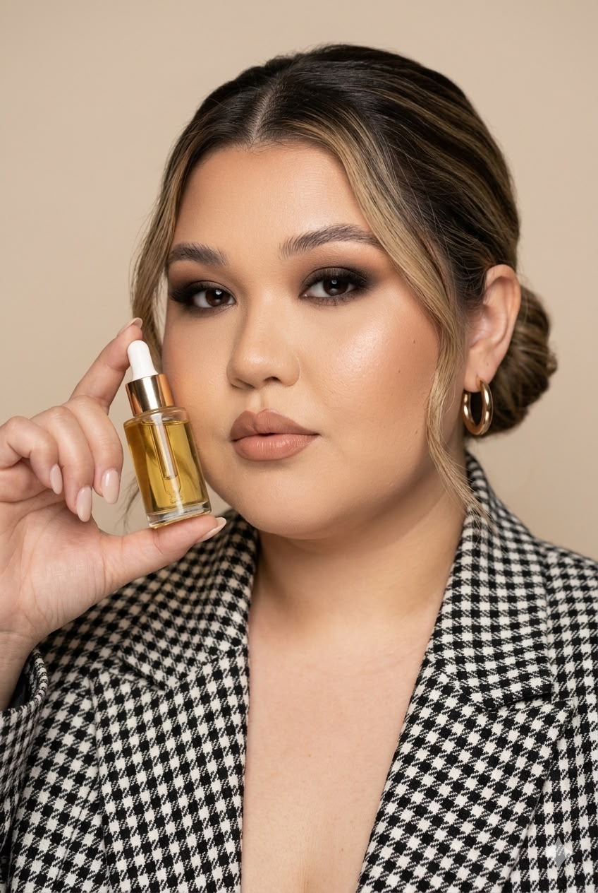
Minha atuação é voltada à estética avançada, com atenção à qualidade da pele, harmonização facial e tricologia.
Busco integrar raciocínio clínico, atualização científica e seleção criteriosa de protocolos para que cada conduta tenha propósito, coerência e naturalidade.
Ver formação profissional →Conheça as principais áreas de atuação e as técnicas disponíveis em cada uma. Clique em um procedimento para ver uma explicação breve.
Planejamento facial com foco em equilíbrio, proporção e naturalidade.
Estratégias voltadas à textura, viço, colágeno e cuidado global da pele.
Avaliação do couro cabeludo e dos fios com base em fisiologia, tecnologia e evidências.
Protocolos corporais com foco em contorno, firmeza, estímulo de colágeno e valorização das proporções.
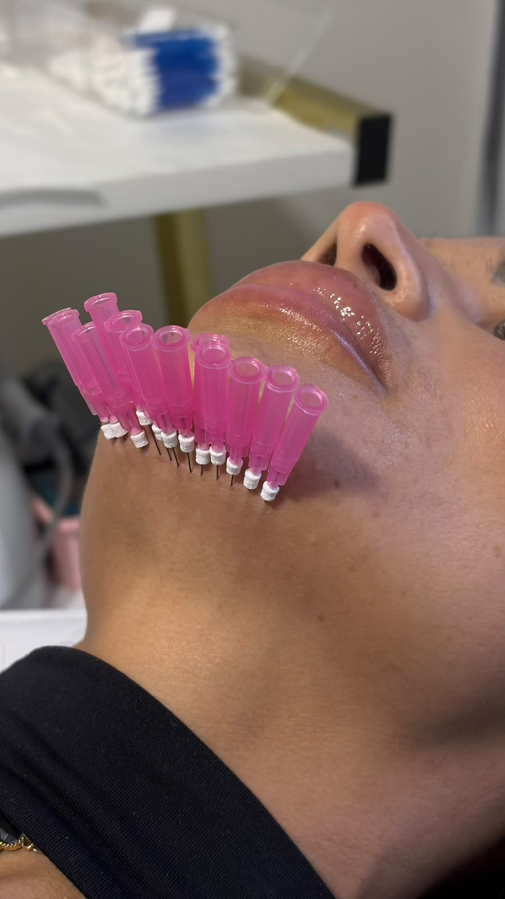


Uma seleção de registros de acompanhamento e resultados clínicos. Os resultados podem variar conforme anatomia, condições clínicas e plano de tratamento.
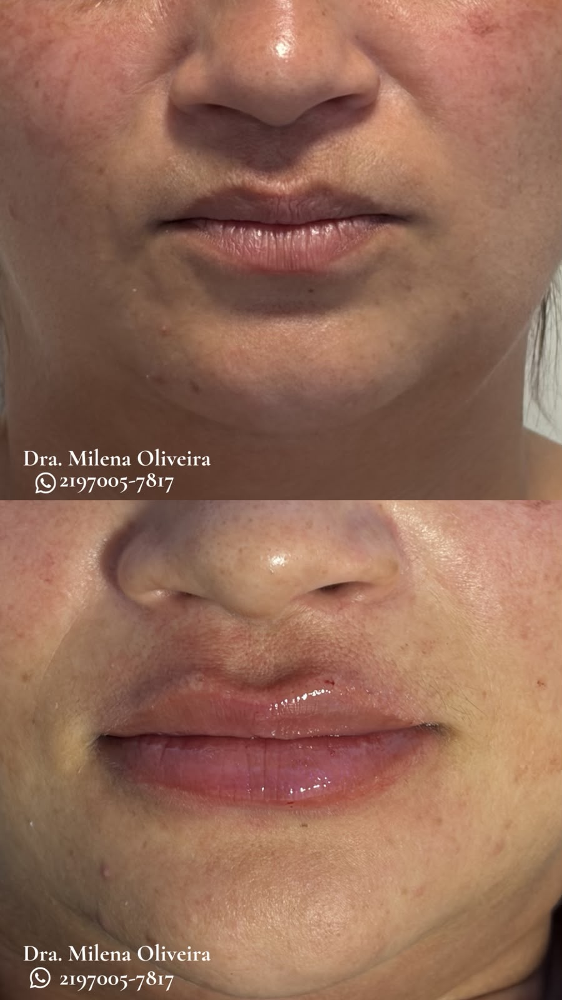
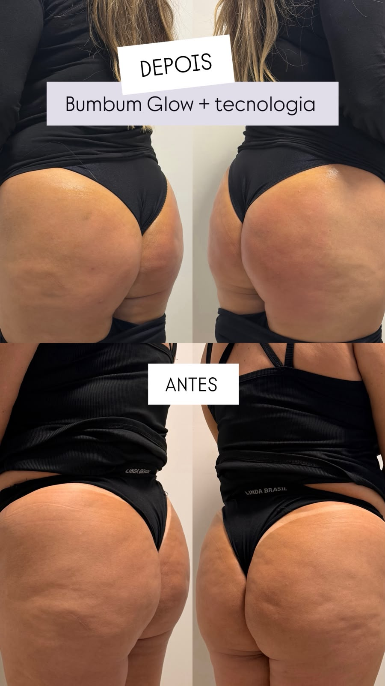
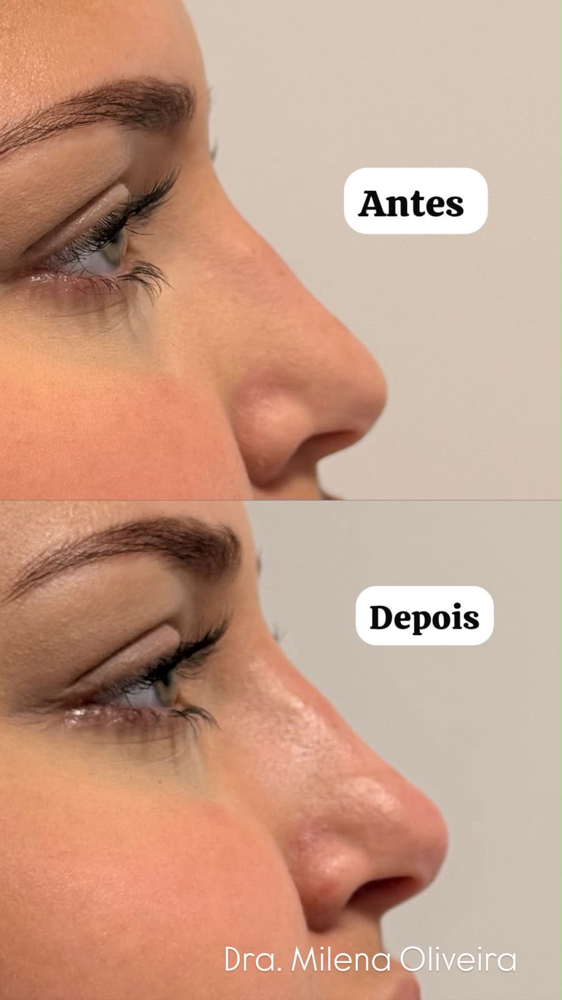
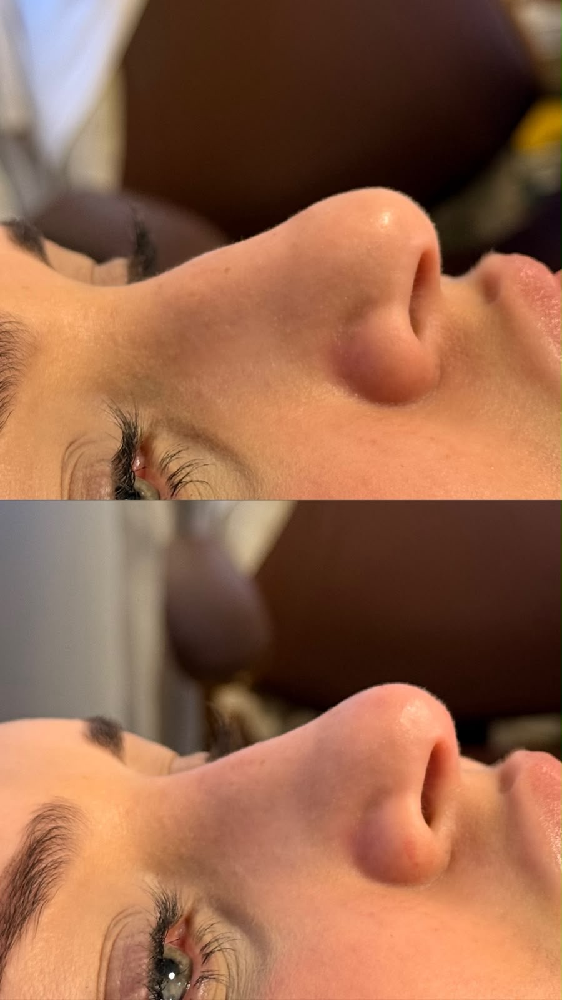
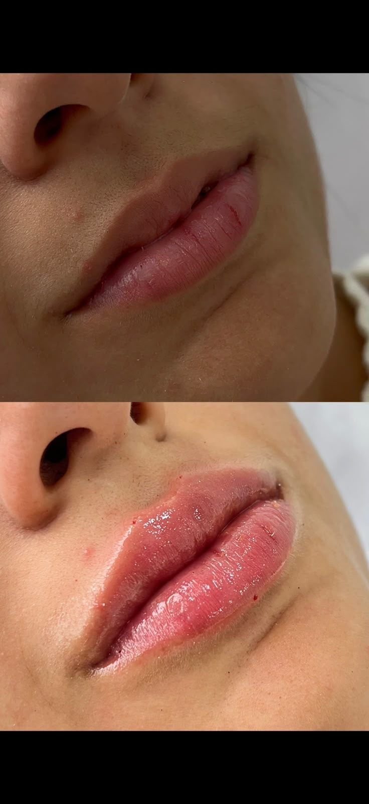
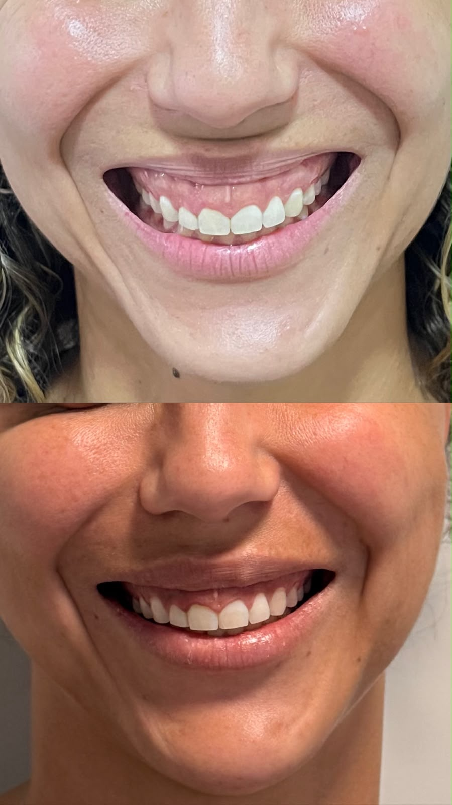
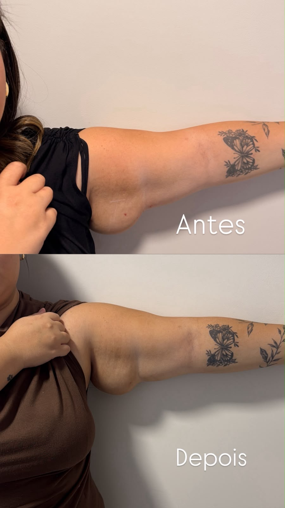
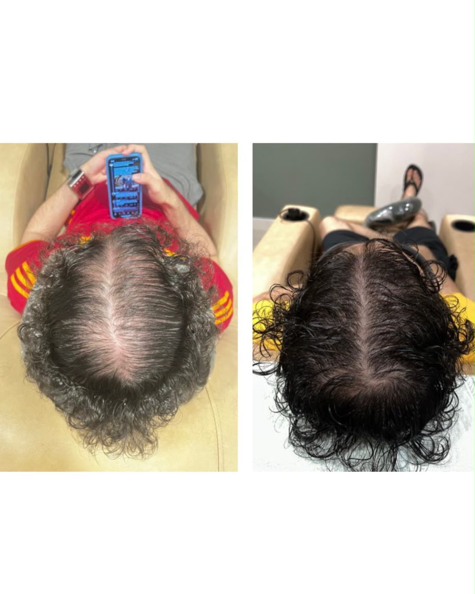
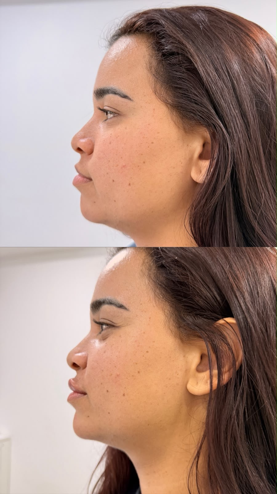
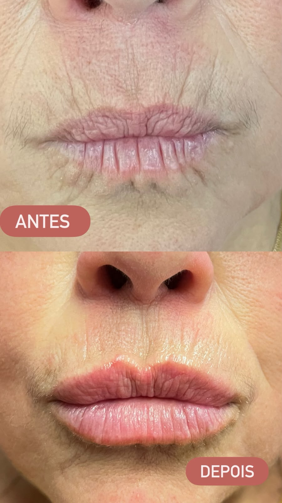
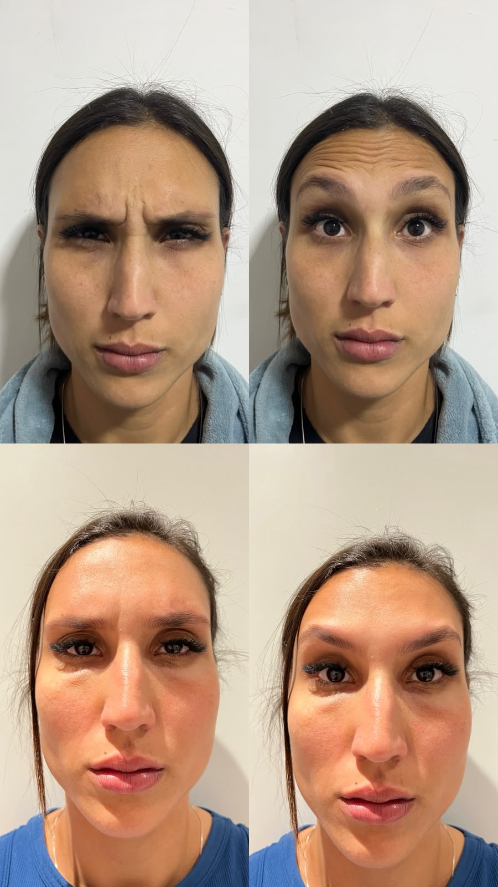
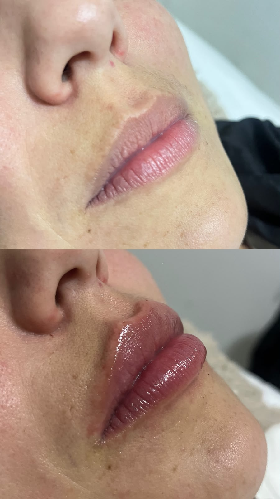
Compreender histórico, características e objetivos antes de definir a conduta.
Planejamento baseado em anatomia, indicação e objetivos do tratamento.
Condutas e técnicas selecionadas com base em evidências e indicação.
Acompanhamento da evolução, preservando naturalidade como princípio.
Conteúdos sobre pele, envelhecimento, cosmetologia, estética avançada e tricologia.
Conteúdo educativo, leitura crítica de evidências e tradução da ciência para a prática estética.
Ver conteúdosAgende uma avaliação para conversarmos sobre seus objetivos e definir as possibilidades de tratamento.